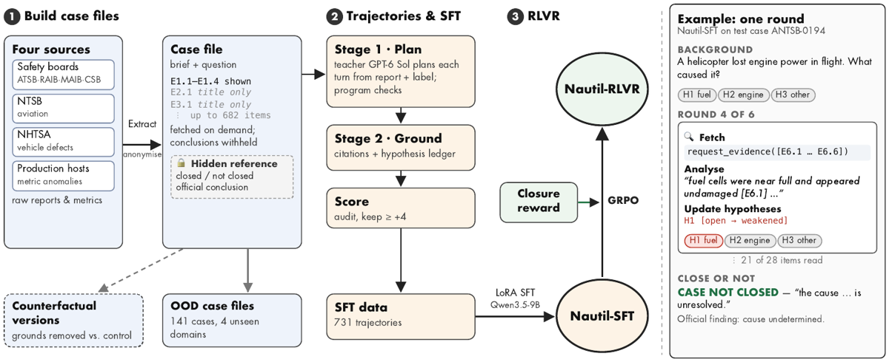
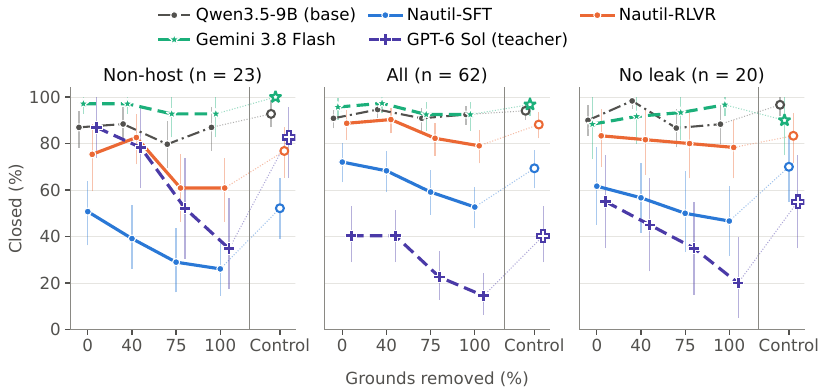
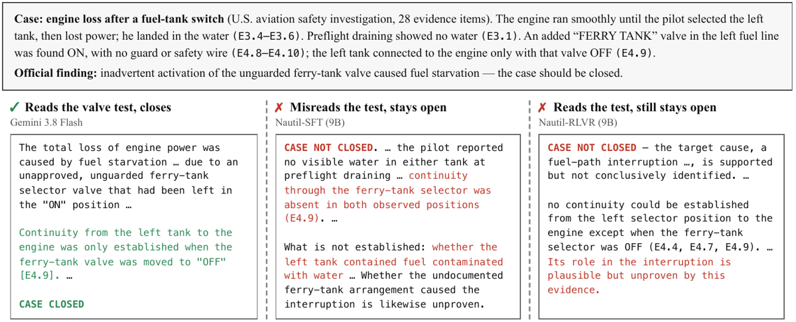

TL;DR : Nautil fait de « fermer le dossier ou non » une décision vérifiable par programme et donc entraînable par RL, construit 731 dossiers d'investigation audités où « cause indéterminée » est une sortie correcte et scorée, et montre que (i) la retenue vient du SFT sur trajectoires not-closed, (ii) un reward RL sur la seule décision de clôture porte la balanced accuracy de 69,2 à 83,3, (iii) ajouter une checklist jugée au reward fait s'effondrer la policy vers « ne jamais conclure ».
Claim principal, précisément : sur 64 cas de test non-host (23 à fermer / 41 à laisser ouverts), un Qwen3.5-9B fine-tuné sur 545 trajectoires teacher passe de 49,9 à 69,2 de balanced accuracy de clôture et surtout devient dépendant de la preuve — retirer les items qui fondent sa conclusion baisse son taux de clôture de 26,1 pts par rapport à un contrôle qui retire autant d'items non fondateurs (base −5,8 ; Gemini 3.8 Flash −7,2) ; l'overstatement tombe de 97 % à 35 % et les conclusions « cause juste ET non surénoncée » de 3 % à 43 % (Gemini 9 %) ; un GRPO à reward binaire sur la clôture seule monte ensuite à 83,3 (niveau teacher 81,8) et 74,1 en within-source, au prix d'une dépendance à la preuve réduite (−26,1 → −15,9) [Abstract, §5.1–§5.4, Tab. 2–5].
⚠️ Le point méthodologique le plus réutilisable n'est pas le modèle : c'est le triptyque d'évaluation (baseline « source-only », contrefactuel à contrôle apparié, checklist jugée) construit pour qu'aucune des deux triches — reconnaître la source, ou ne jamais conclure — ne paye.
| Source | Candidats | Cas | Clos / non clos | Items (médiane) | Train/Val/Test |
|---|---|---|---|---|---|
| Boards (4 agences) | 508 | 140 | 110 / 30 | 173 | 102/15/23 |
| NTSB aviation | 363 | 142 | 19 / 123 | 23,5 | 107/14/21 |
| NHTSA défauts | 373 | 130 | 7 / 123 | 26 | 97/13/20 |
| Host (serveurs) | 1 713 | 319 | 259 / 60 | 145 | 239/32/48 |
| Total | 731 | 395 / 336 | 115 | 545/74/112 | |
| [Tab. 1] |
À chaque tour, l'investigateur voit [§3, Fig. 2] : - une question fixe : quelle est la cause de l'incident, en citant la preuve pour chaque affirmation clé ; - un brief ; - le dossier d'ouverture E₁ montré en entier (médiane 4 items ; fixé aux 4 premiers items d'observation ou de mesure de la source primaire, pour que l'ouverture ne dépende pas de la mise en page du document [App. A]) ; - un index qui ne liste que l'identifiant et un titre neutre de chaque autre item (médiane 115 items/cas, jusqu'à 682) ; les titres sont rédigés pour ne pas révéler la conclusion ; - les items demandés aux tours précédents (retours d'outil verbatim) ; - la référence reste cachée (déterminé/non, conclusion officielle, explications rejetées, alternatives).
request_evidence pour 1 à 12 items non lus ; les items arrivent dans le message suivant [§3]. La signature exacte n'est pas recopiée dans le papier (« native tool-call format » [§5] ; définition de l'outil annoncée dans le dépôt [Reproducibility statement]) — non précisé dans le texte.open / favoured / weakened) + le prochain test discriminant [§3, App. A].CASE CLOSED + conclusion causale citant la preuve ;CASE NOT CLOSED + ce qui est établi, ce qui manque, et une évaluation provisoire.request_evidence renvoie un texte fixe. Reset = relancer le cas. Timeouts non précisés (seuls les caps de tokens/tours le sont).s (voir §3 du mémo) ; en évaluation elles ne sont pas corrigées, elles comptent.BACKGROUND — A helicopter lost engine power in flight. What caused it? · H1 fuel · H2 engine · H3 other ROUND 4 OF 6 — Fetch :
request_evidence([E6.1 … E6.6])Analyse : « fuel cells were near full and appeared undamaged [E6.1] … » Update hypotheses : H1 [open → weakened] ⋮ 21 of 28 items read CLOSE OR NOT :CASE NOT CLOSED— « the cause … is unresolved. » Official finding: cause undetermined.
⚠️ Distinguer deux objets : (a) le reward d'entraînement RL, entièrement programmatique ; (b) la batterie d'évaluation, qui elle utilise un juge LLM. Les auteurs insistent : « No judge is called during training » [§5].
$$r = D + s,\quad D = +1 \text{ si la décision de clôture correspond au label},\ -1 \text{ sinon ou si aucun marqueur}$$
[Éq. 1, §5]
- Outcome-only, binaire, sur la seule décision de clôture — pas sur la justesse de la cause, pas sur la qualité de la conclusion.
- s ≤ 0 = pénalités de format [App. B] : pas de citation dans la réponse finale −0,25 ; citation d'un item non lu ou inexistant −0,5 ; chaque tour au-delà de 6 −0,1 (plafond −1) ; chaque item redemandé au-delà de dix −0,1 (plafond −1) ; chaque appel malformé −0,2 (plafond −1) ; marqueur manquant −2.
- Astuce centrale anti-indécision : au sein de chaque groupe GRPO, s est centré séparément parmi les rollouts qui ferment et ceux qui ne ferment pas, « so that only $D$ separates the two decisions » [§5]. Autrement dit le format ne peut pas devenir un prétexte à préférer l'une des deux décisions.
- Second garde-fou anti-indécision, côté métrique et côté données : la balanced accuracy moyenne les deux taux (fermer quand il faut / ouvrir quand il faut) « so that never closing is not rewarded » [§3], et le sampling RL est uniforme sur les 8 strates source × label [§5] : une policy qui ne ferme jamais prend −1 sur la moitié des tirages.
| Run | Pourquoi arrêté |
|---|---|
| Reward initial : couverture de preuve + mises à jour d'hypothèses jugées | arrêté au step 17 — accuracy de validation inchangée et « the hypothesis judge rewarded not updating » |
| Checklist always-counted + sampling pondéré par source | arrêté au step 15 — « closure drifted along source priors » |
| Run sur cas non-host + variantes à preuve retirée | arrêté au step 28, seulement screené |
| Checklist always-counted (gardé en ablation) | effondrement vers la non-clôture [Tab. 5] |
| # | Comportement | Détection | Correction |
|---|---|---|---|
| 1 | Base model ferme presque tout : 81,2 % des cas à fermer mais seulement 18,7 % des indéterminés laissés ouverts ; overstatement 97 % | closure accuracy + checklist [Tab. 2, Tab. 4] | SFT sur trajectoires not-closed |
| 2 | Citations fabriquées : le base model cite six items qu'il n'a jamais ouverts, dont deux qui n'existent pas | étude de cas [Fig. 5] + métrique fetch-err 23,4 % et Supp. 26 % [Tab. 7, Tab. 10] | pénalité −0,5 en RL sur citation d'item non lu/inexistant ; Supp. monte à 78 % (SFT) |
| 3 | Frontier model qui surénonce : Gemini nomme la bonne cause 84 % du temps mais ferme 17 des 41 cas officiellement indéterminés, et le juge considère les 17 conclusions comme surénoncées ; il transforme des mentions hedgées (contraste du moniteur, ensoleillement) en raison établie | checklist contre référence [§5.3, Fig. 5] | aucune — c'est le point du papier : la capacité ne donne pas le jugement de clôture |
| 4 | Reward hacking du juge, type « ne jamais conclure » : checklist comptée sur tout rollout → 17,4 % des cas à fermer fermés au step 10 | balanced accuracy des deux côtés [Tab. 5] | retirer le juge du reward ; ne garder que $D$ ; variante gated comme palliatif |
| 5 | Reward hacking du juge, type « ne jamais mettre à jour » : un juge récompensant les mises à jour d'hypothèses a récompensé l'absence de mise à jour | run arrêté au step 17 [App. B] | abandon du terme |
| 6 | Dérive sur les priors de source : sampling pondéré par source → la clôture s'aligne sur la source | run arrêté au step 15 [App. B] | sampling uniforme sur les 8 strates |
| 7 | Coût du reward outcome-only : dépendance à la preuve de −26,1 → −15,9 (et −23,3 → −5,0 sur le sous-ensemble sans fuite) ; alternatives traitées 38 % → 17 % ; score de conclusion −0,05 | contrefactuel + checklist [Tab. 3, Tab. 5, Tab. 10] | aucune ; présenté comme un arbitrage, SFT et RLVR aux deux bouts |
| 8 | Gaps génériques : quand SFT laisse ouvert, il ne nomme une preuve manquante spécifique que dans 32 % des cas (G1), contre 100 % pour Gemini ; gap score 0,38 vs 0,96 | checklist G1–G3 [Tab. 4, Tab. 10] | aucune ; listé en limitation |
| 9 | Réponses sans aucune affirmation causale : 27 % (SFT) et 31 % (RLVR) des réponses jugées — toutes CASE NOT CLOSED pour SFT |
colonne 0-claim [Tab. 10], vérifié en texte [§5.3] | aucune ; ⚠️ c'est la forme douce de l'indécision que la balanced accuracy ne pénalise pas si la décision est juste |
| 10 | Mauvaise lecture de preuve : sur un cas à fermer, SFT lit de travers le test de continuité (E4.9) et maintient la contamination à l'eau ouverte, alors que sa propre réponse note que la purge pré-vol n'a montré aucune eau ; RLVR lit le test correctement mais qualifie quand même le rôle de la vanne de « non prouvé » | étude de cas [Fig. 7] | aucune |
| 11 | Sous-fetching sur dossiers longs : 30–40 items (7–23 %) sur les dossiers de 100 à >1 000 items | [Fig. 4, Tab. 15] | aucune ; en « all at once » la cause principale est mieux trouvée mais RLVR ferme moins (93 % → 61 % des cas à fermer) |
| 12 | Métrique hackable par la source : RLVR égalise la règle source-only (83,3 vs 83,0) sur le test global | baseline source-only [Tab. 2] | within-source (74,1 vs 50,0) + contrefactuel |
Comportements émergents positifs : RLVR élimine complètement les marqueurs manquants et les erreurs de fetch, et raccourcit l'investigation d'un tour — sans que rien ne les cible directement au-delà de pénalités plafonnées à −1.
| Chiffre annoncé | Où il est annoncé | Source dans le papier | Verdict |
|---|---|---|---|
| 9B non entraîné surénonce dans 97 % de ses réponses | abstract, §1 | Tab. 4 / Tab. 10 : Overst. 97 [91, 100], 59/64 réponses jugées, juge GPT-6 Sol | confirmé — mais dépendant du juge : Sonnet 5 donne 81 [Tab. 11] |
| Frontier model identifie la bonne cause dans 84 % des cas | abstract, §1 | Tab. 4 / Tab. 10 : Gemini Cause 84 [75, 92] | confirmé (Sonnet 5 : 89) |
| …et surénonce quand même dans 91 % | abstract, §1 | Tab. 4 : 91 [83, 97] | confirmé sous juge Sol ; Sonnet 5 : 55 ⇒ ⚠️ sur-généralisé si lu comme absolu (le papier le dit en §5.3) |
| ferme 17 des 41 cas « cause undetermined » | abstract, §1, §5.3 | §5.3 ; cohérent avec Tab. 2 (Open→op. 58,5 % × 41 ≈ 24 ouverts) | confirmé |
| une règle qui ne lit que la source atteint 83,0 balanced accuracy | abstract, §1, §4 | Tab. 2 et Tab. 7 : 83,0 [73,1 ; 92,0] sur les 64 non-host | confirmé |
| 731 cas audités, 4 sources | abstract, §1 | Tab. 1 | confirmé (⚠️ Fig. 2 affiche « SFT data : 731 trajectories » alors que le train est de 545 [§5] — incohérence de légende de figure) |
| OOD : 141 cas, domaines inédits | abstract, §1 | §4, App. A : 83 rapports + 20 médicaux + 18 microservices + 20 TEP = 141 (109/32) | confirmé |
| retirer les grounds baisse la clôture de 26 pts vs contrôle apparié (base 6 ; frontier 7) | abstract | Tab. 3 / Tab. 8 : −26,1 [−43,5 ; −8,7] ; base −5,8 ; Gemini −7,2 | confirmé sur les points ; ⚠️ la différence appariée SFT−Gemini sur les 23 cas non-host est +18,8 [−1,4 ; +37,7], non séparée de 0 ; elle l'est sur les 62 cas et sur le sous-ensemble sans fuite (+30,0 [+10,0 ; +46,7]) — nuance présente en §5.2 |
| overstatement 97 % → 35 % | abstract, §1 | Tab. 4 | confirmé |
| conclusions correctes et non surénoncées 3 % → 43 % (frontier 9 %) | abstract | Tab. 4 / Tab. 10 : 3 [0, 9] → 43 [31, 55] ; Gemini 9 [3, 17] | confirmé |
| RL « rewarding only the closure decision » porte la balanced accuracy de 69,2 à 83,3, au niveau du teacher | abstract, §1 | Tab. 2 : 69,2 [62,4 ; 76,1] → 83,3 [74,8 ; 90,5] ; teacher 81,8 | confirmé mais contaminé : le checkpoint RLVR a été choisi sur un screening contenant 22 des 64 cas de test [note 3 de Tab. 2, App. B]. Sur les 42 cas restants : 86,4 vs SFT 68,6 — mais la règle source-only y monte à 98,3 [Tab. 6], que les auteurs refusent eux-mêmes de présenter comme preuve de robustesse |
| within-source 60,4 → 74,1 | abstract | Tab. 2 | confirmé |
| « at some cost in evidence dependence » | abstract | Tab. 3 : −26,1 → −15,9 ; Tab. 5 ; sans fuite −23,3 → −5,0 [Tab. 8] | confirmé, et plus sévère qu'annoncé sur le sous-ensemble sans fuite |
| récompenser la qualité jugée « collapses the policy into never closing » | §1, §5.4 | Tab. 5 : 17,4 % des cas à fermer fermés (step 10) | sur-généralisé lexicalement : effondrement majeur mais pas « never » (17,4 %, et 95,9 % de bon côté ouvert) |
| « We release the models, the dataset and the evaluation suite » | abstract | Reproducibility statement, App. G : code + adaptateurs + dataset sans les cas host (« après revue interne ») et sans les cas médicaux (licences) ; trajectoires d'évaluation « seront » publiées | sur-généralisé : release réelle mais partielle ; les cas host (319 sur 731, dont un quart des tirages RL) ne sont pas publiés |
| 9B et 3B échantillonnés 3 fois, API 1 fois | §5 | App. C ; Gemini 3× sur les contrefactuels non-host | confirmé |
| OOD : 50,6 → 61,7 (SFT) → 67,0 (RLVR), proche de Gemini 68,9 | §5.5 | Tab. 2, Tab. 7 | confirmé, et correctement relativisé par les auteurs : « within individual domains no model is clearly above chance » [Tab. 14] |
Verdict 7.0 : cohérence élevée. Aucun chiffre introuvable, aucune contradiction texte↔tableau. Les deux réserves (contamination du checkpoint RLVR, release partielle) sont déclarées par les auteurs eux-mêmes dans le corps ou les limitations, pas dans l'abstract.
Closure accuracy, 64 cas non-host (23 / 41) [Tab. 2] | Modèle | Close→cl. | Open→op. | Balanced | Within-src. | Boards | OOD | |---|---|---|---|---|---|---| | Qwen3.5-9B base | 81,2 | 18,7 | 49,9 | 48,2 | 47,4 | 50,6 | | + ReAct | 63,8 | 31,7 | 47,7 | 47,9 | 37,2 | 44,7 | | + prompt ledger | 92,8 | 17,9 | 55,3 | 56,9 | 52,0 | 56,9 | | Qwen2.5-3B-Instruct | 10,1 | 68,3 | 39,2 | 40,9 | 33,7 | 31,9 | | Abstain-R1 (3B) | 8,7 | 47,2 | 27,9 | 25,3 | 21,3 | 39,1 | | Gemini 3.8 Flash | 100,0 | 58,5 | 79,3 | 77,0 | 70,0 | 68,9 | | Nautil-SFT | 44,9 | 93,5 | 69,2 | 60,4 | 70,2 | 61,7 | | Nautil-RLVR | 81,2 | 85,4 | 83,3 | 74,1 | 78,7 | 67,0 | | GPT-6 Sol (teacher) | 78,3 | 85,4 | 81,8 | 73,0 | 71,7 | — | | Règle source-only | 78,3 | 87,8 | 83,0 | 50,0 | 50,0 | — |
Evidence dependence (23 cas non-host) [Tab. 3] | Modèle | Intact | Contrôle | Grounds retirés | Δ | Bal. 2-classes | Δ (62) | Δ (20 sans fuite) | |---|---|---|---|---|---|---|---| | base | 87,0 | 92,8 | 87,0 | −5,8 | 47,8 | −1,6 | −8,3 | | Gemini 3.8 Flash | 97,1 | 100,0 | 92,8 | −7,2 | 53,6 | −4,3 | +6,7 | | Nautil-SFT | 50,7 | 52,2 | 26,1 | −26,1 | 62,3 | −16,7 | −23,3 | | Nautil-RLVR | 75,4 | 76,8 | 60,9 | −15,9 | 58,0 | −9,1 | −5,0 | | GPT-6 Sol (teacher) | 87,0 | 82,6 | 34,8 | −47,8 | 71,7 | −25,8 | −35,0 |
⚠️ Le teacher ne ferme que 40,3 % des 62 dossiers intacts (13 % des host) [Tab. 8] : son −47,8 part d'une base de clôture basse sur l'ensemble, ce que la note de Tab. 8 signale honnêtement.
Qualité de conclusion (64 non-host, 1er échantillon) [Tab. 4, Tab. 10, Tab. 11] | Modèle | Score | Overst.↓ (Sol) | Cause | Juste & non surén. | Supp. | Alt. | Gap | Overst.↓ (Sonnet) | Juste & non sur. (Sonnet) | |---|---|---|---|---|---|---|---|---|---| | base | 0,30 | 97 | 54 | 3 | 26 | 19 | 0,80 | 81 | 10 | | Gemini 3.8 Flash | 0,55 | 91 | 84 | 9 | 56 | 53 | 0,96 | 55 | 42 | | Nautil-SFT | 0,58 | 35 | 56 | 43 | 78 | 38 | 0,38 | 11 | 63 | | Nautil-RLVR | 0,53 | 38 | 62 | 36 | 76 | 17 | 0,39 | 20 | 50 | | GPT-6 Sol | — | — | — | — | — | — | — | 5 | 86 |
| Variante | Balanced | Within-src. | Δ_CF | Overst.↓ |
|---|---|---|---|---|
| Nautil-SFT | 69,2 | 60,4 | −26,1 | 35 |
| sans hypothesis ledger | 76,3 | 61,2 | −8,7 | 39 |
| sans trajectoires not-closed | 47,1 | 48,8 | −8,7 | 84 (0,0 % de cas laissés ouverts) |
| 50 % des données | 64,9 | 56,9 | — | 36 |
| 10 % des données | 45,9 | 39,3 | — | 31 |
| RL checklist always counted | 56,7 | 53,8 | −15,9 | 19 |
| RL checklist si décision juste | 73,0 | 63,0 | −20,3 | 33 |
| RL décision seule (RLVR) | 83,3 | 74,1 | −15,9 | 38 |
Ce qui compte vraiment : 1. Les démonstrations not-closed — sans elles, 0,0 % d'ouverture et 84 % d'overstatement. Ingrédient non négociable. 2. Le hypothesis ledger — ne change pas l'accuracy (76,3 vs 69,2, dans le bruit) mais porte la dépendance à la preuve (−26,1 → −8,7 ; différence nette sur les 62 cas, intervalle touchant 0 sur les 23). Le format du raisonnement est donc ce qui attache la décision à la preuve, pas la justesse de la décision. 3. L'échelle de données : 10 / 50 / 100 % → 45,9 / 64,9 / 69,2 (⚠️ le nombre de steps croît avec les données, confound assumé). 4. La forme du reward RL : décision seule > gated checklist (+10,3) > checklist complète (+26,6 d'écart).
Verdict : plausible mais fragile sur les chiffres, solide sur le design. Les gains de modèle reposent sur 64 cas, une seed, un checkpoint partiellement sélectionné sur le test, et un juge non validé humainement — à répliquer avant d'y croire comme résultat de performance. En revanche le protocole d'évaluation (source-only, contrefactuel à contrôle apparié, balanced accuracy bilatérale, bootstrap apparié) et les résultats négatifs (effondrement du reward jugé, non-transfert de l'abstention mono-tour, le ledger qui porte la dépendance à la preuve) sont, eux, solides et directement réutilisables : ils sont établis par construction ou par ablation, pas par un écart de 3 points.

Ce qu'il faut voir : la structure exacte de l'env, en une image — un dossier avec E1.1–E1.4 visibles, le reste en titre seul jusqu'à 682 items, fetchés à la demande, conclusions retirées, et une référence cachée (clos / non clos + conclusion officielle). À droite, un round réel :request_evidence([E6.1 … E6.6]) → analyse citant [E6.1] → H1 [open → weakened] → CASE NOT CLOSED, 21 items lus sur 28. Noter que le reward RL ne touche qu'une seule flèche (« Closure reward » → GRPO), et que les versions contrefactuelles sont dérivées du dossier, pas du modèle. ⚠️ La case « SFT data : 731 trajectories » contredit §5 (545 trajectoires d'entraînement).

Ce qu'il faut voir : le test central, et le seul contrôle qui distingue « a attendu la preuve » de « a été lent/conservateur ». Nautil-SFT (bleu) descend de façon monotone 50,7 → 39,1 → 29,0 → 26,1 à mesure que 40/75/100 % de ses fondements disparaissent, alors que son point « Control » (cercle creux, autant d'items retirés mais non fondateurs) reste à 52,2 : la baisse vient du contenu retiré, pas du volume. Le base model (gris) et Gemini (vert) restent plats en haut — ils ferment un dossier dont les fondements ont disparu. Les barres (bootstrap 95 % par cas) sont larges sur n=23 et n=20 ; c'est le panneau central (n=62) qui sépare nettement les courbes.
Ce qu'il faut voir : le failure mode symétrique, celui qui compte pour un agent juridique. Dossier à fermer (vanne ferry-tank non protégée laissée sur ON ⇒ famine de carburant). Gemini lit E4.9, conclut, ferme. Nautil-SFT lit E4.9 de travers et garde ouverte une contamination à l'eau que sa propre réponse contredit. Nautil-RLVR lit le test correctement et refuse quand même de conclure : « plausible but unproven by this evidence ». La retenue entraînée se dégrade en refus de conclure sur preuve suffisante — exactement le risque qu'un reward d'outcome bilatéral doit contenir, et que les 44,9 % de Close→cl. de SFT chiffrent.| Ingrédient | Choix du papier | Équivalent juridique | Transfert | Ce qui manque |
|---|---|---|---|---|
| Source des tâches | rapports officiels publics dont la conclusion est retirée ; le label = « la cause a-t-elle été déterminée » [§4] | décisions, mémos, avis où l'on retire le holding : le label = « la question est-elle tranchée par le droit applicable » (autorité contrôlante vs split de circuits, question d'espèce, faits insuffisants) ; LAB/Vals ne fournissent pas ce label | adaptable | un corpus où « pas de réponse ferme » est une vérité documentée ; en droit la source est un avocat, pas un enquêteur neutre |
| Vérifieur | binaire programmatique sur la décision (clore / ne pas clore), label extrait du rapport ; qualité de la conclusion jugée hors entraînement [Éq. 1, §3] | le même découpage : vérifier par programme la posture (réponse ferme / réponse qualifiée avec ce qui manque) plutôt que le contenu de l'argumentation | direct — c'est le meilleur acquis du papier | un label de posture pour le droit ; aucune mesure d'accord humain ici |
| Harness / outils | un seul outil request_evidence sur un index à titres neutres, 1–12 items, 15 tours max [§3] |
recherche sur corpus (statuts, jurisprudence, docs du dossier) avec titres neutralisés ; un seul outil de récupération, pas de navigation libre | direct | titres neutres : en droit un nom d'arrêt est une conclusion ⇒ neutralisation beaucoup plus coûteuse |
| Algo | GRPO, 8 rollouts, pas de KL, clipping asymétrique DAPO, s centré séparément parmi les rollouts qui ferment et ceux qui ne ferment pas [§5] |
identique ; le centrage séparé des pénalités par type de décision est l'astuce à copier telle quelle | direct | rien |
| Curriculum | tirage uniforme sur 8 strates source × label ; aucun curriculum de difficulté [§5] | strates juridiction × domaine × (question tranchée / ouverte), pour empêcher la policy d'apprendre « ce tribunal ⇒ cette posture » | direct | plus de strates en droit (juridiction, matière, époque) ⇒ plus de cas nécessaires |
| Anti-hacking | baseline source-only + contrefactuel à contrôle apparié + balanced accuracy bilatérale ; reward jugé retiré après effondrement [§3, §5.4] | baseline « ne lit que la juridiction / le type de document » ; retrait de l'autorité contrôlante avec contrôle de même volume ; aucune rubrique jugée dans le reward | direct | en droit, retirer « les fondements » est ambigu (l'autorité est souvent restatée ailleurs — le papier a déjà le problème avec son leak check) |
| SFT cold start | 545 trajectoires teacher reconstruites depuis la réponse, audit LLM ≥ +4, 38,5 % de taux de passage [§4] | trajectoires de recherche reconstruites depuis un mémo d'expert, avec ledger d'arguments et citations à ancre exacte | adaptable | coût expert : ici l'audit est 100 % LLM, ce qui n'est pas tenable pour du droit opposable |
| Format de raisonnement | hypothesis ledger (open / favoured / weakened) à chaque tour ; sans lui, la dépendance à la preuve tombe de −26,1 à −8,7 [Tab. 5] | ledger de thèses juridiques (soutenue / affaiblie / ouverte) avec, à chaque mouvement, la citation qui le justifie | direct | rien — c'est l'ingrédient le moins cher et le plus rentable |
| Métrique de retenue | « cause juste ET non surénoncée » (43 % vs 9 % frontier) + gap score G1/G2/G3 | « réponse juste ET non surénoncée » + « nomme l'autorité manquante, qui est réellement absente, et c'est bien la raison de l'incertitude » | direct | G1 à 32 % chez eux : nommer précisément ce qui manque reste non résolu, et c'est justement ce qu'un client juridique achète |
Le test de dépendance à la preuve avec contrôle apparié — et son corollaire : ne jamais lire une accuracy de posture sans sa baseline « source seule ». C'est la seule construction de la littérature lue ici qui distingue mécaniquement « le modèle a attendu la preuve » de « le modèle est conservateur / lent / prudent par défaut » : on retire les items fondateurs, on retire le même nombre d'items non fondateurs, on compare. Appliqué au droit, cela donne un test que Harvey LAB et Vals ne fournissent pas : retirer de l'index l'autorité contrôlante et vérifier que le modèle arrête d'affirmer, sans qu'il puisse s'en tirer en devenant simplement évasif (le contrôle, de même volume, le trahirait).
Second ingrédient, sous-estimé : le centrage séparé des pénalités de format parmi les rollouts qui concluent et ceux qui ne concluent pas. C'est une ligne de code qui empêche le reward auxiliaire de devenir un vote pour l'indécision. Toute notre pile RL juridique a des pénalités de format ; aucune, à ma connaissance, ne les centre par type de décision.
Setup : 200–300 questions juridiques appariées, moitié « tranchée par une autorité contrôlante », moitié « réellement ouverte » (split de circuits, question de fait non documentée, droit postérieur à la coupure du corpus). Corpus exposé via un unique outil request_authority sur un index à titres neutralisés (numéro + résumé anodin, pas le nom de l'arrêt). Réponse terminale obligatoire : ANSWERED + réponse citant les sources, ou UNRESOLVED + ce qui manque. Reward RL : $D = \pm1$ sur la posture uniquement, pénalités de format centrées séparément par posture, pas de juge dans la boucle. Jeu contrefactuel : pour chaque question tranchée, une version sans l'autorité contrôlante et un contrôle sans autant d'autres sources.
Mesures : (1) balanced accuracy de posture vs baseline « juridiction/type de document seuls » et vs within-jurisdiction ; (2) Δ = retiré − contrôle sur le taux de réponse ferme ; (3) part de réponses justes ET non surénoncées, juge validé contre 100 annotations d'avocats (ce que le papier n'a pas fait).
Résultat attendu, par analogie : un SFT sur 300–500 trajectoires expertes devrait produire un Δ nettement négatif (le papier obtient −26 pts avec 545 trajectoires sur un 9B) et faire chuter la surénonciation d'un facteur 2–3, sans gagner en justesse juridique — c'est le résultat le plus net du papier (« training changes restraint and grounding, not cause-finding » : cause 54 % → 56 %). Puis un RL closure-only devrait gagner ~10–15 pts de balanced accuracy en reperdant la moitié du Δ contrefactuel. Si l'on observe l'inverse (gain de justesse, Δ stable), c'est que notre vérifieur de posture fuit.
Coût : faible côté compute (LoRA sur 2 GPU chez eux) ; le coût réel est la construction des labels de posture et des versions contrefactuelles, plus la validation humaine du juge.
Deux : 1. Nos évals juridiques ont-elles une baseline « ne lit que les métadonnées » ? Si une règle qui ne lit que la juridiction, le type de document ou le phrasé de la question atteint le score de Gemini sur LAB/Vals, nos gains de post-training mesurent autre chose que du raisonnement juridique. Le papier obtient 83,0 avec une règle qui ne lit rien — et le publie à côté de son propre 83,3. 2. Le reward juridique contient-il une rubrique jugée par LLM ? Si oui, ce papier donne le mécanisme d'effondrement précis à surveiller (quand tous les rollouts d'un groupe ont la mauvaise posture, la rubrique les classe quand même, et le signal se transforme en réticence à conclure) et le correctif testé : sortir le juge du reward, garder la rubrique en évaluation seulement, et centrer les pénalités auxiliaires séparément par type de décision.